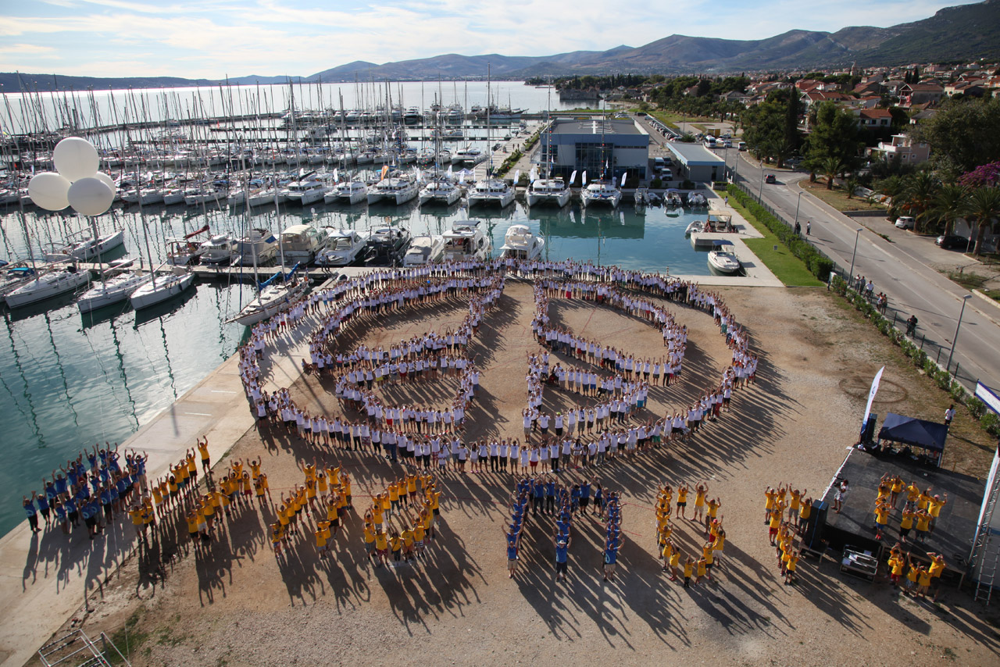
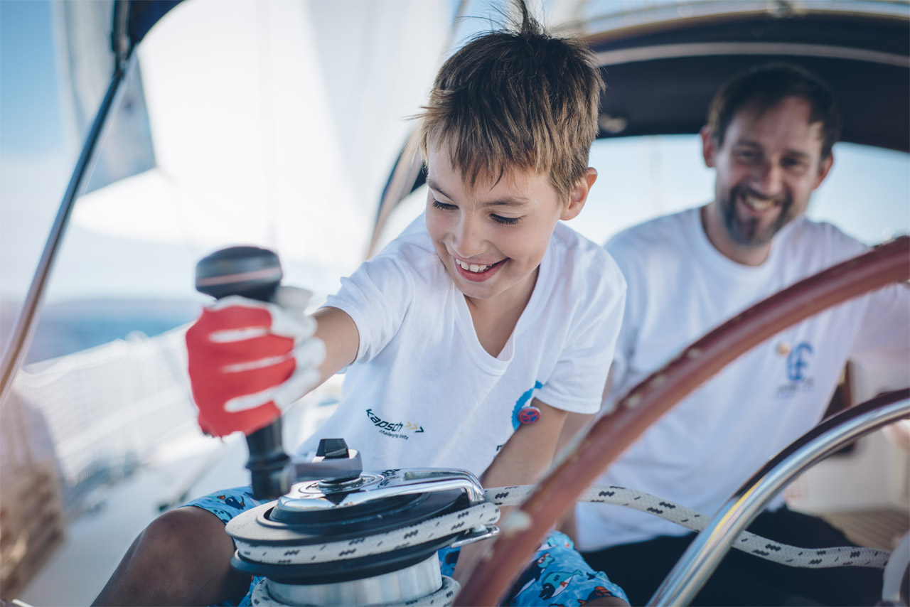
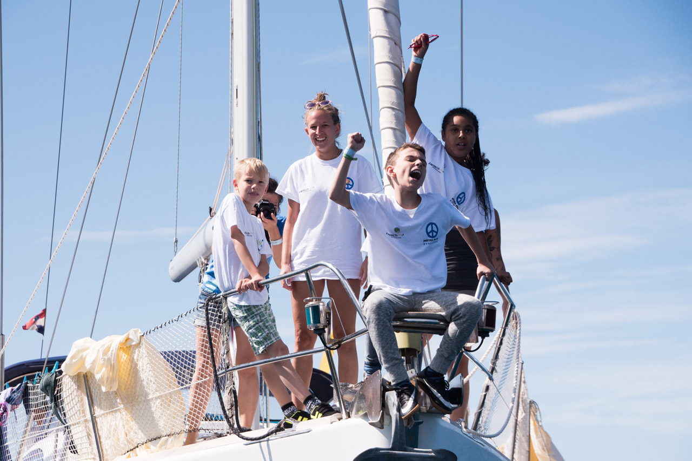
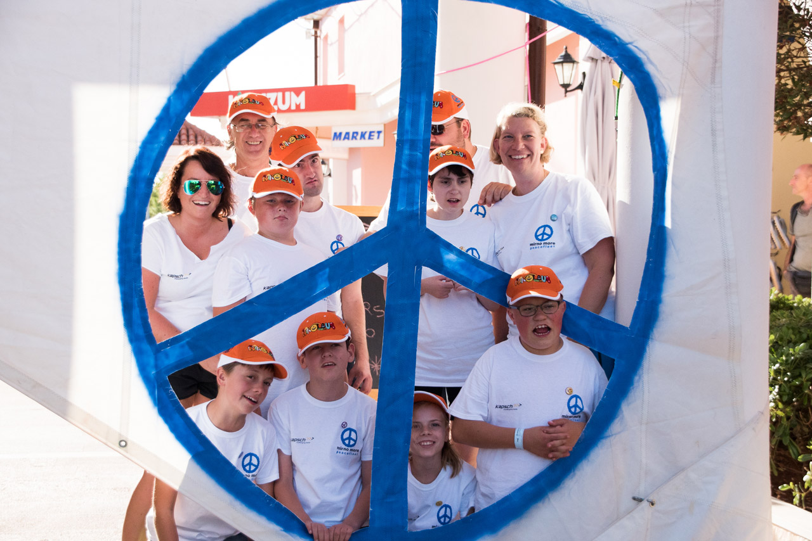

Menü
Wir sind Ihr Nummer 1 Ansprechpartner für die Erstellung von Produkten auf der Basis von Geodaten, sei es Karten (Print und Online), Datenbank-Anwendungen, Visualisierung einfacher bis komplexer geografischer Daten und vieles mehr. In der w3geo GmbH vereinigen drei Unternehmen ihre jeweilige Knowledge Leadership und ihre Human Ressources zu projektorientierter Lösungskompetenz in einem starken Team.
Das wünschen wir all unseren Kunden, Partnern und allen Menschen, die uns geholfen haben, so viele Projekte so erfolgreich zu beginnen, aufrechtzuerhalten und zu beenden im vergangenen Jahr
2020 war für viele Menschen schwierig und wir hoffen - wie alle - auf eine Rückkehr zur Normalität im neuen Jahr.
Als Weihnachtsgeschenk wollten wir heuer ein Zeichen der Hoffnung setzen und haben eine Spende an die Mirno More Friedensflotte getätigt. Andreas aus unserem Team liegt dieses Projekt besonders am Herzen, ist er doch auch jedes Jahr unentgeltlich als Skipper mit dabei und verschafft so vielen sozial benachteiligten Kindern aus unterschiedlichen Ländern ein einzigartiges Erlebnis und die Erkenntnis, das am Ende des Tages die beste Strategie immer ist: Arbeiten im Team und vorwärts blicken!
In diesem Sinne wünschen wir geruhsame Feiertage und einen guten Rutsch ins Jahr 2021!
   